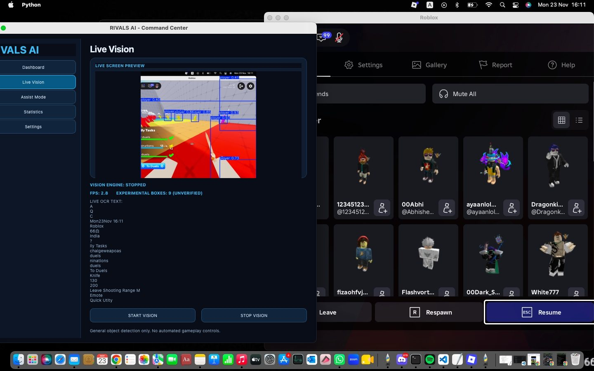
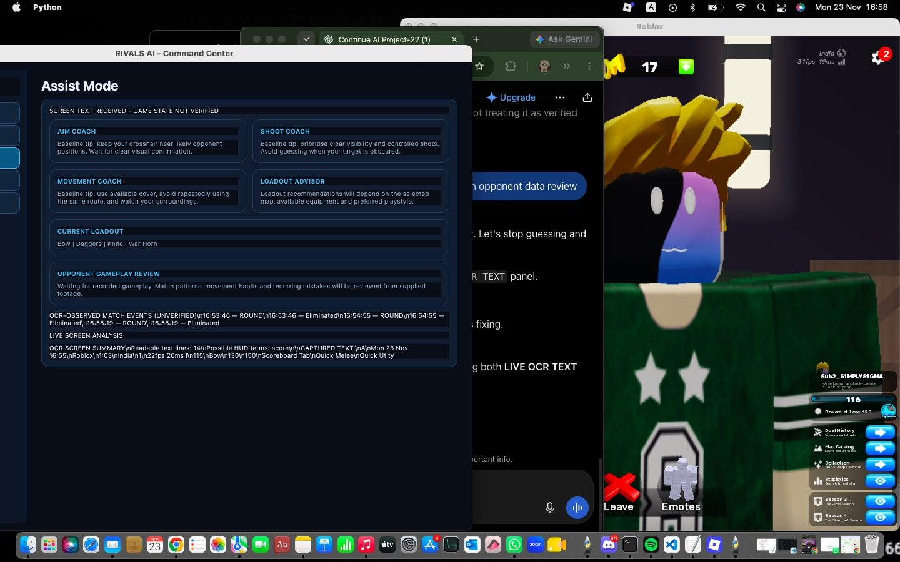
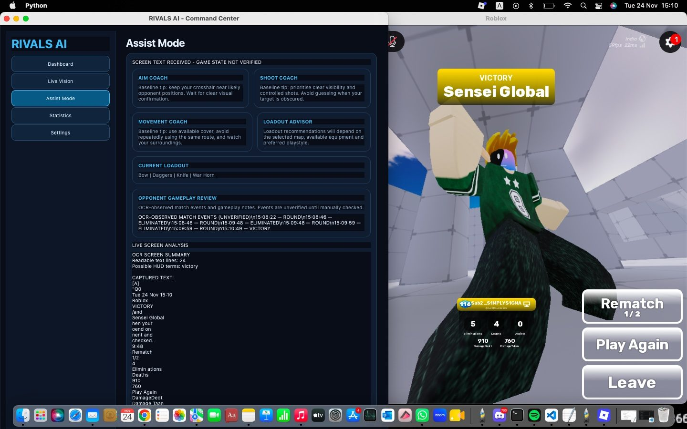
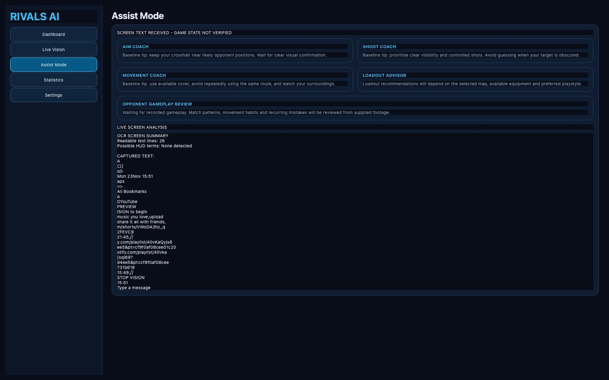

01 / VISION
Live Vision
Uses computer-vision models to inspect captured screen frames and attempt to identify relevant visual information.
Meet RIVALS AI — an experimental assistant designed to analyse on-screen gameplay information and provide useful insights while you stay in control.
ASSIST • ANALYSE • ENHANCE
THE PROJECT
RIVALS AI is a computer-vision and screen-analysis project built to help players understand useful information displayed during gameplay.
RIVALS AI is designed to support the player's awareness and decision-making. It does not play the game or make gameplay decisions for the user.
WHAT IT CAN DO
The project brings multiple analysis tools together in one desktop dashboard.
01 / VISION
Uses computer-vision models to inspect captured screen frames and attempt to identify relevant visual information.
02 / TEXT
Reads visible on-screen text, such as interface labels and other readable game information.
03 / INSIGHTS
Brings screen-analysis information into a dashboard so the player can review it and make their own decisions.
04 / DASHBOARD
A desktop interface for viewing the project’s vision preview, OCR output, status and analysis panels.
Development note: This is an experimental prototype. Detection quality and feature availability can vary by game scene and system performance. Only features demonstrated in the current build should be treated as working.
UNDER THE HOOD
RIVALS AI combines Python tools for screen capture, computer vision, text recognition and its desktop interface.
REAL PROJECT SCREENSHOTS
A look at the current experimental desktop build. Detection results and OCR output can be imperfect and should be checked.




Prototype note: Player detection is experimental and may produce false detections. These screenshots demonstrate development progress, not guaranteed opponent recognition.
SEE IT IN ACTION
Watch the actual RIVALS AI dashboard and see the features that are currently implemented.
Replace this panel with your demo video link or a screenshot of the real dashboard.
A recorded demonstration is recommended for exhibition visitors. It avoids relying on a live game connection or unpredictable network conditions.
YOUR FEEDBACK MATTERS
You've seen the idea and the demo. Share what you think, what worked well and what could be improved.
We'd love to hear your thoughts about RIVALS AI!
GIVE YOUR REVIEW ↗Please do not include private information in your feedback.
THE RIVALS AI IDEA
Smarter assistance. Player-controlled gameplay.
Back to top ↑